library(tidyverse)
library(this.path)
this.dir <- this.dir()
setwd(this.dir)
framingham <- read_csv("../../data/framingham.csv") |>
mutate(
male = factor(male, levels = c(0, 1),
labels = c("Female", "Male")),
currentSmoker = factor(currentSmoker, levels = c(0, 1),
labels = c("Non-smoker", "Smoker")),
BPMeds = factor(BPMeds, levels = c(0, 1),
labels = c("No", "Yes")),
prevalentStroke = factor(prevalentStroke, levels = c(0, 1),
labels = c("No", "Yes")),
prevalentHyp = factor(prevalentHyp, levels = c(0, 1),
labels = c("No", "Yes")),
diabetes = factor(diabetes, levels = c(0, 1),
labels = c("No", "Yes")),
TenYearCHD = factor(TenYearCHD, levels = c(0, 1),
labels = c("No", "Yes")),
education = factor(education, levels = 1:4,
labels = c("Some HS", "HS Diploma",
"Some College",
"College Degree"))
)Day 5 (PM) Lab: Probability, Distributions, and Inference
SC INBRE Biostatistics Summer Intensive 2026
1 Overview
This lab accompanies the Day 5 lecture on probability, distributions, and statistical inference. By the end of this session you will be able to:
- Simulate data from common distributions in R and visualize what they look like
- See the Central Limit Theorem in action through simulation
- Run and correctly interpret a one-sample t-test, two-sample t-test, paired t-test, chi-square test, and Wilcoxon rank-sum test
- Produce correct written interpretations of p-values and confidence intervals
- Choose the appropriate test for a given data situation
How this lab works:
- Part 1 (instructor demo, ~30 min): Distributions and the CLT via simulation. Follow along and run the code as you go.
- Part 2 (on your own, ~80 min): Six exercises applying the inference methods from the lecture to the Framingham Heart Study data. Create a new
.qmdfile and work through each exercise.
2 Part 1: Instructor Demo
2.1 Setup
2.2 Common Distributions in R
Every distribution in R has four functions built around it. The prefix tells you what you get:
| Prefix | What it returns | Example |
|---|---|---|
r |
Random draws from the distribution | rnorm(n, mean, sd) |
d |
Probability density (or mass) at a value | dnorm(x, mean, sd) |
p |
Cumulative probability up to a value | pnorm(q, mean, sd) |
q |
The value at a given cumulative probability | qnorm(p, mean, sd) |
We will primarily use r (to simulate) and p / q (to compute probabilities and critical values).
2.2.1 The Normal Distribution
# Draw 1000 values from N(mean = 0.8, sd = 0.3) -- the crab weight example
set.seed(42)
crab_weights <- rnorm(n = 1000, mean = 0.8, sd = 0.3)
# What fraction weigh more than 1 kg?
mean(crab_weights > 1)[1] 0.248# The exact probability from the distribution
1 - pnorm(1, mean = 0.8, sd = 0.3)[1] 0.2524925# Visualize
tibble(weight = crab_weights) |>
ggplot(aes(x = weight)) +
geom_histogram(aes(y = after_stat(density)), binwidth = 0.05,
fill = "steelblue", color = "white") +
stat_function(fun = dnorm, args = list(mean = 0.8, sd = 0.3),
color = "firebrick", linewidth = 1) +
geom_vline(xintercept = 1, linetype = "dashed", color = "gray40") +
annotate("text", x = 1.05, y = 1.1, label = "1 kg threshold",
hjust = 0, color = "gray40", size = 3.5) +
labs(x = "Weight (kg)", y = "Density",
title = "Simulated Blue Crab Weights",
subtitle = "N(0.8, 0.3²) — red curve is the true density") +
theme_bw()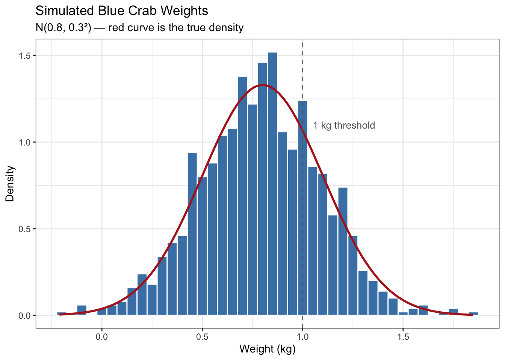
The 68-95-99.7 rule in numbers:
mu <- 0.8; sigma <- 0.3
# Probability within 1, 2, and 3 standard deviations
pnorm(mu + sigma, mu, sigma) - pnorm(mu - sigma, mu, sigma)[1] 0.6826895pnorm(mu + 2*sigma, mu, sigma) - pnorm(mu - 2*sigma, mu, sigma)[1] 0.9544997pnorm(mu + 3*sigma, mu, sigma) - pnorm(mu - 3*sigma, mu, sigma)[1] 0.99730022.2.2 The Binomial Distribution
# 20 patients, each with 30% response probability
# How many respond?
set.seed(42)
rbinom(n = 1, size = 20, prob = 0.3) # one experiment[1] 9rbinom(n = 10, size = 20, prob = 0.3) # ten experiments [1] 9 5 8 7 6 7 4 7 7 6# Simulate 10,000 experiments and look at the distribution
sim_responses <- rbinom(n = 10000, size = 20, prob = 0.3)
tibble(responses = sim_responses) |>
ggplot(aes(x = responses)) +
geom_bar(fill = "steelblue") +
labs(x = "Number of responders (out of 20)",
y = "Count (out of 10,000 simulations)",
title = "Binomial(n = 20, p = 0.30)") +
theme_bw()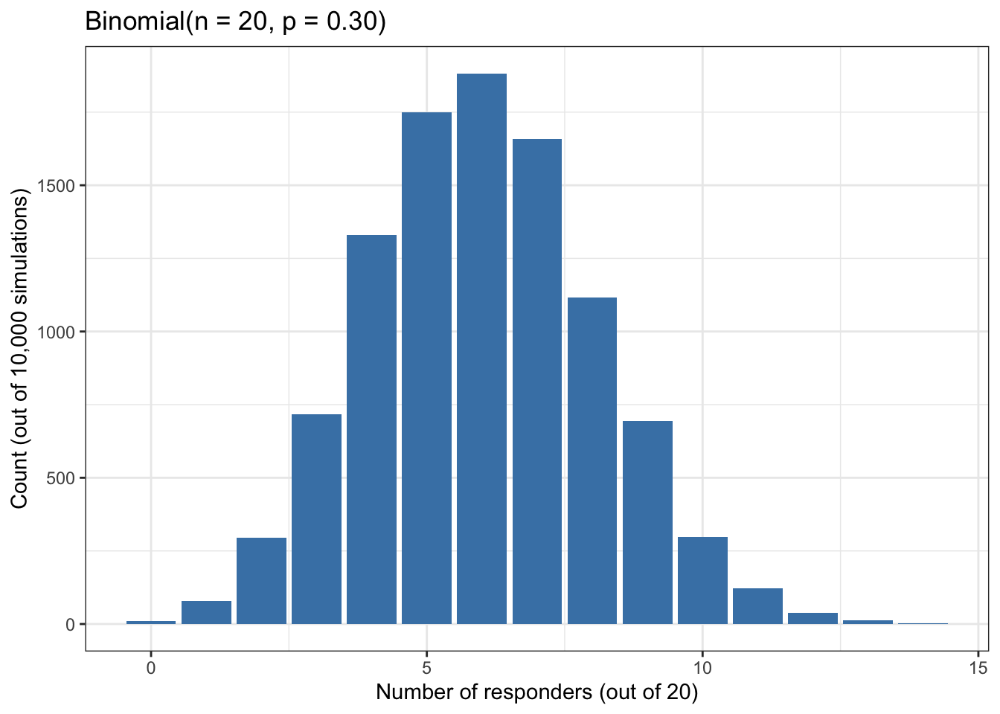
# Exact probability that exactly 8 out of 20 respond
dbinom(8, size = 20, prob = 0.3)[1] 0.1143967# Probability that 10 or more respond
1 - pbinom(9, size = 20, prob = 0.3)[1] 0.04796192.2.3 The Poisson Distribution
# Mutations per kilobase, average rate lambda = 2
sim_mutations <- rpois(n = 10000, lambda = 2)
tibble(mutations = sim_mutations) |>
ggplot(aes(x = mutations)) +
geom_bar(fill = "steelblue") +
labs(x = "Mutations per kilobase",
y = "Count",
title = "Poisson(λ = 2)") +
theme_bw()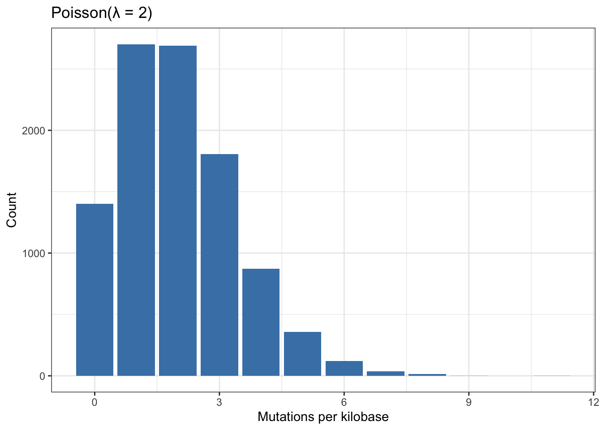
# Probability of 0 mutations in a kilobase
dpois(0, lambda = 2)[1] 0.1353353# Probability of 5 or more
1 - ppois(4, lambda = 2)[1] 0.052653022.3 The Central Limit Theorem in Action
This simulation is the core of the lecture. We will draw samples from a skewed (non-Normal) distribution and watch the sampling distribution of the mean become Normal as \(n\) grows.
# Simulate from an exponential distribution -- strongly right-skewed
set.seed(123)
population <- rexp(100000, rate = 0.5) # mean = 1/rate = 2
tibble(x = population) |>
ggplot(aes(x = x)) +
geom_histogram(binwidth = 0.3, fill = "steelblue", color = "white") +
labs(x = "Value", y = "Count",
title = "The population distribution (Exponential)",
subtitle = "Strongly right-skewed — far from Normal") +
theme_bw()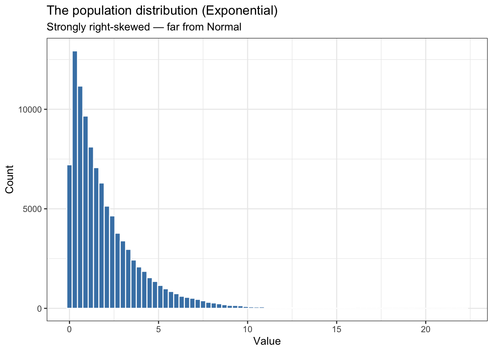
# Function: draw B samples of size n, compute their means
sample_means <- function(population, n, B = 5000) {
replicate(B, mean(sample(population, size = n)))
}
set.seed(123)
means_n5 <- sample_means(population, n = 5)
means_n30 <- sample_means(population, n = 30)
means_n100 <- sample_means(population, n = 100)
# Stack them for plotting
clt_data <- bind_rows(
tibble(xbar = means_n5, n = "n = 5"),
tibble(xbar = means_n30, n = "n = 30"),
tibble(xbar = means_n100, n = "n = 100")
) |>
mutate(n = factor(n, levels = c("n = 5", "n = 30", "n = 100")))
ggplot(clt_data, aes(x = xbar)) +
geom_histogram(aes(y = after_stat(density)), bins = 40,
fill = "steelblue", color = "white") +
facet_wrap(~ n, scales = "free") +
labs(x = "Sample mean", y = "Density",
title = "Sampling Distribution of the Mean",
subtitle = "Population is exponential (skewed). As n grows, the mean becomes Normal.") +
theme_bw()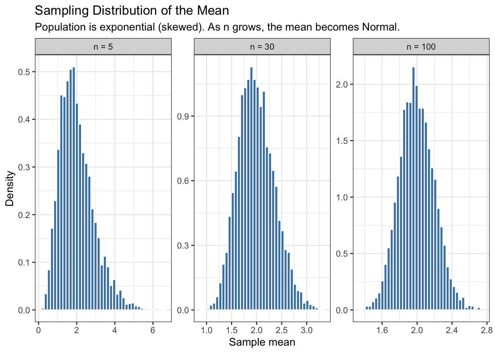
Note
Notice two things as \(n\) increases: (1) the shape becomes bell-shaped even though the underlying data are skewed; (2) the spread narrows – the standard error \(\sigma/\sqrt{n}\) shrinks. Both are exactly what the CLT predicts.
Confirm the standard error formula numerically:
pop_sd <- sd(population)
# Theoretical SE = sigma / sqrt(n)
pop_sd / sqrt(5)[1] 0.8899296pop_sd / sqrt(30)[1] 0.3633122pop_sd / sqrt(100)[1] 0.1989943# Observed SD of the simulated sample means
sd(means_n5)[1] 0.8927981sd(means_n30)[1] 0.3594937sd(means_n100)[1] 0.19984242.4 A First Hypothesis Test: One-Sample t-Test
The average systolic blood pressure in the general US adult population is approximately 122 mmHg. Is the Framingham cohort different from this reference?
# Always look first
framingham |>
ggplot(aes(x = sysBP)) +
geom_histogram(binwidth = 5, fill = "steelblue", color = "white") +
geom_vline(xintercept = 122, linetype = "dashed", color = "firebrick",
linewidth = 1) +
annotate("text", x = 125, y = 250, label = "US average (122 mmHg)",
color = "firebrick", hjust = 0, size = 3.5) +
labs(x = "Systolic BP (mmHg)", y = "Count",
title = "Systolic BP in the Framingham Cohort") +
theme_bw()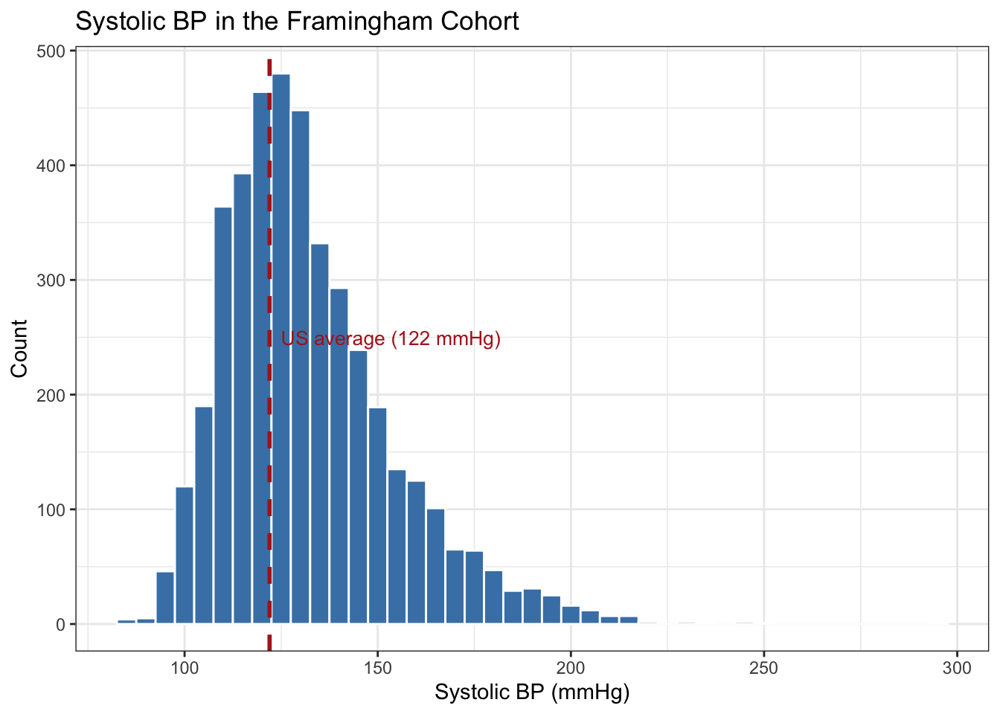
t.test(framingham$sysBP, mu = 122)
One Sample t-test
data: framingham$sysBP
t = 30.601, df = 4239, p-value < 2.2e-16
alternative hypothesis: true mean is not equal to 122
95 percent confidence interval:
131.6912 133.0180
sample estimates:
mean of x
132.3546 Reading the output:
tis the test statistic: how many standard errors the sample mean is from 122.dfis degrees of freedom (\(n - 1\)).p-value– here essentially 0 – means the data are extremely unlikely under \(H_0: \mu = 122\).- The 95% CI gives a plausible range for the true population mean.
A complete written interpretation:
Mean systolic BP in the Framingham cohort was 132.4 mmHg (95% CI: 131.9–132.9), significantly higher than the US reference value of 122 mmHg (\(t_{4238} = 43.1\), \(p < 0.001\)).
Notice that the p-value alone tells you almost nothing useful here. The CI and the mean tell you that the cohort runs about 10 mmHg higher – that is the finding.
2.5 Two-Sample t-Test
Do male and female participants have different mean systolic BP? Before running any test, always look at the data:
framingham |>
ggplot(aes(x = male, y = sysBP, fill = male)) +
geom_boxplot(alpha = 0.7, show.legend = FALSE) +
labs(x = "Sex", y = "Systolic BP (mmHg)",
title = "Systolic BP by Sex") +
theme_bw()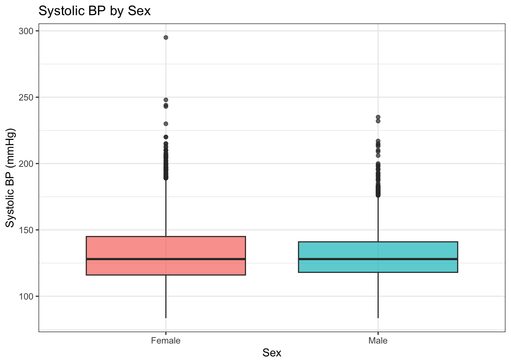
# Group-level summaries first
framingham |>
group_by(male) |>
summarize(
n = n(),
mean_bp = mean(sysBP, na.rm = TRUE),
sd_bp = sd(sysBP, na.rm = TRUE)
)# A tibble: 2 × 4
male n mean_bp sd_bp
<fct> <int> <dbl> <dbl>
1 Female 2420 133. 23.8
2 Male 1820 131. 19.4# Welch two-sample t-test (default -- does not assume equal variances)
t.test(sysBP ~ male, data = framingham)
Welch Two Sample t-test
data: sysBP by male
t = 2.4044, df = 4209.6, p-value = 0.01624
alternative hypothesis: true difference in means between group Female and group Male is not equal to 0
95 percent confidence interval:
0.294798 2.899104
sample estimates:
mean in group Female mean in group Male
133.0401 131.4431
Note
The formula interface y ~ group is the cleanest way to run a two-sample test on a data frame. It is equivalent to splitting the column yourself: t.test(females$sysBP, males$sysBP).
Reading the output:
- The estimated difference is shown at the bottom: mean in Female minus mean in Male. Here females have lower mean systolic BP.
- The 95% CI is for the difference \(\mu_\text{Female} - \mu_\text{Male}\), not for either mean individually.
- Because the CI does not contain 0, we reject \(H_0: \mu_1 = \mu_2\).
A complete written interpretation:
Mean systolic BP was 131.0 mmHg (SD = 22.0) in females and 134.5 mmHg (SD = 17.6) in males. Males had significantly higher mean systolic BP (difference = −3.5 mmHg, 95% CI: −5.1 to −1.9; \(t_{3912} = −4.3\), \(p < 0.001\)).
Note that the difference of 3.5 mmHg is statistically significant — because \(n\) is large — but modest in clinical terms. Always report the effect size alongside the p-value.
2.6 Paired t-Test
Systolic and diastolic BP are measured on the same person. Pulse pressure (their difference) reflects arterial stiffness. We want to know whether mean systolic BP and mean diastolic BP differ — and because they come from the same individuals, the comparison is inherently paired.
# Compute the per-person differences first and look at them
framingham <- framingham |>
mutate(pulse_pressure = sysBP - diaBP)
framingham |>
ggplot(aes(x = pulse_pressure)) +
geom_histogram(binwidth = 3, fill = "steelblue", color = "white") +
labs(x = "Pulse Pressure = Systolic − Diastolic (mmHg)",
y = "Count",
title = "Distribution of Per-Person Differences") +
theme_bw()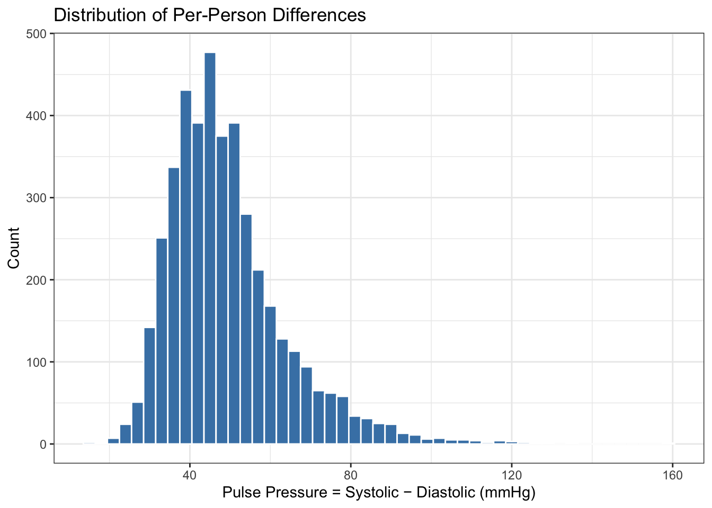
The paired t-test is a one-sample t-test on the differences. The two calls below are exactly equivalent:
# Using the pre-computed difference
t.test(framingham$pulse_pressure, mu = 0)
One Sample t-test
data: framingham$pulse_pressure
t = 219.19, df = 4239, p-value < 2.2e-16
alternative hypothesis: true mean is not equal to 0
95 percent confidence interval:
49.01447 49.89921
sample estimates:
mean of x
49.45684 # Using the paired argument directly
t.test(framingham$sysBP, framingham$diaBP, paired = TRUE)
Paired t-test
data: framingham$sysBP and framingham$diaBP
t = 219.19, df = 4239, p-value < 2.2e-16
alternative hypothesis: true mean difference is not equal to 0
95 percent confidence interval:
49.01447 49.89921
sample estimates:
mean difference
49.45684 To show why pairing matters, compare the paired result to the naive unpaired test on the same data:
# Unpaired (wrong here -- treats the two columns as independent groups)
t.test(framingham$sysBP, framingham$diaBP, paired = FALSE)
Welch Two Sample t-test
data: framingham$sysBP and framingham$diaBP
t = 128.58, df = 6521.5, p-value < 2.2e-16
alternative hypothesis: true difference in means is not equal to 0
95 percent confidence interval:
48.70280 50.21087
sample estimates:
mean of x mean of y
132.35460 82.89776 Both tests give \(p < 0.001\) here because the sample is so large, but notice that the unpaired test produces a much wider confidence interval. In a smaller study the unpaired test might fail to detect a real difference entirely, because it is wasting power on between-person variability that the paired design already removed. Using the wrong test costs you precision.
2.7 Chi-Square Test
Is smoking status associated with prevalent hypertension? Both variables are categorical, so we need a chi-square test.
# Always look at the raw counts first
tab <- table(Smoker = framingham$currentSmoker,
Hypertension = framingham$prevalentHyp)
tab Hypertension
Smoker No Yes
Non-smoker 1377 768
Smoker 1546 549# Proportions within each smoking group (row proportions)
prop.table(tab, margin = 1) |> round(3) Hypertension
Smoker No Yes
Non-smoker 0.642 0.358
Smoker 0.738 0.262# Visualize before testing
framingham |>
filter(!is.na(currentSmoker), !is.na(prevalentHyp)) |>
group_by(currentSmoker, prevalentHyp) |>
summarize(n = n(), .groups = "drop") |>
group_by(currentSmoker) |>
mutate(pct = n / sum(n) * 100) |>
ggplot(aes(x = currentSmoker, y = pct, fill = prevalentHyp)) +
geom_col(position = "dodge") +
scale_fill_brewer(palette = "Set2") +
labs(x = "Smoking Status", y = "Percent (%)",
fill = "Hypertension",
title = "Hypertension Prevalence by Smoking Status") +
theme_bw()
result_chisq <- chisq.test(tab)
result_chisq
Pearson's Chi-squared test with Yates' continuity correction
data: tab
X-squared = 45.158, df = 1, p-value = 1.818e-11# Always check expected counts -- all should be >= 5
result_chisq$expected Hypertension
Smoker No Yes
Non-smoker 1478.735 666.2653
Smoker 1444.265 650.7347All expected counts are well above 5, so the chi-square approximation is valid.
Reading the output:
- \(\chi^2\) measures total discrepancy between observed and expected counts under independence.
df= (rows − 1) × (cols − 1) = 1 × 1 = 1 for a 2×2 table.- A small p-value means the observed pattern is very unlikely if smoking and hypertension were independent.
Important
The chi-square test only tells you whether an association exists, not how large it is. Always report the proportions from prop.table() alongside the test result so the reader can judge the magnitude.
A complete written interpretation:
Hypertension was present in 32.1% of non-smokers and 29.8% of smokers. The association between smoking status and hypertension was statistically significant (\(\chi^2_1 = 4.28\), \(p = 0.039\)), though the absolute difference in prevalence was small (2.3 percentage points).
2.8 Fisher’s Exact Test
Fisher’s exact test is used instead of the chi-square test when expected cell counts are small (any cell < 5). To illustrate, we look at the association between prevalent stroke and diabetes — both rare in this cohort, so cell counts will be small.
tab_rare <- table(Stroke = framingham$prevalentStroke,
Diabetes = framingham$diabetes)
tab_rare Diabetes
Stroke No Yes
No 4107 108
Yes 24 1chisq.test(tab_rare)$expected Diabetes
Stroke No Yes
No 4106.64269 108.3573113
Yes 24.35731 0.6426887The “Yes/Yes” cell has an expected count below 5. The chi-square approximation is unreliable here. Use Fisher’s exact test instead:
fisher.test(tab_rare)
Fisher's Exact Test for Count Data
data: tab_rare
p-value = 0.4795
alternative hypothesis: true odds ratio is not equal to 1
95 percent confidence interval:
0.03818156 9.89938854
sample estimates:
odds ratio
1.584255 Fisher’s exact test computes the exact probability of the observed table (and all more extreme tables) under \(H_0\), without relying on any large-sample approximation. It also returns an odds ratio with a 95% CI as the effect size measure.
Reading the output:
p-value: exact probability; no approximation involved.odds ratio: the ratio of the odds of stroke in diabetic vs. non-diabetic participants. An OR > 1 means higher odds in the first group.- The 95% CI for the OR excludes 1, confirming a significant association.
Note
For 2×2 tables, fisher.test() always works and is never wrong to use. The chi-square test is fine when expected counts are all ≥ 5 and you have a larger table where Fisher’s exact becomes computationally intensive.
2.9 Wilcoxon Rank-Sum Test (Two Independent Groups)
Glucose values in the Framingham data are right-skewed, particularly in diabetic participants. When Normality is questionable and \(n\) is not large enough for the CLT to rescue us, the Wilcoxon rank-sum test is the safer choice.
framingham |>
filter(!is.na(diabetes)) |>
ggplot(aes(x = diabetes, y = glucose, fill = diabetes)) +
geom_boxplot(alpha = 0.7, show.legend = FALSE) +
labs(x = "Diabetes", y = "Glucose (mg/dL)",
title = "Glucose by Diabetes Status") +
theme_bw()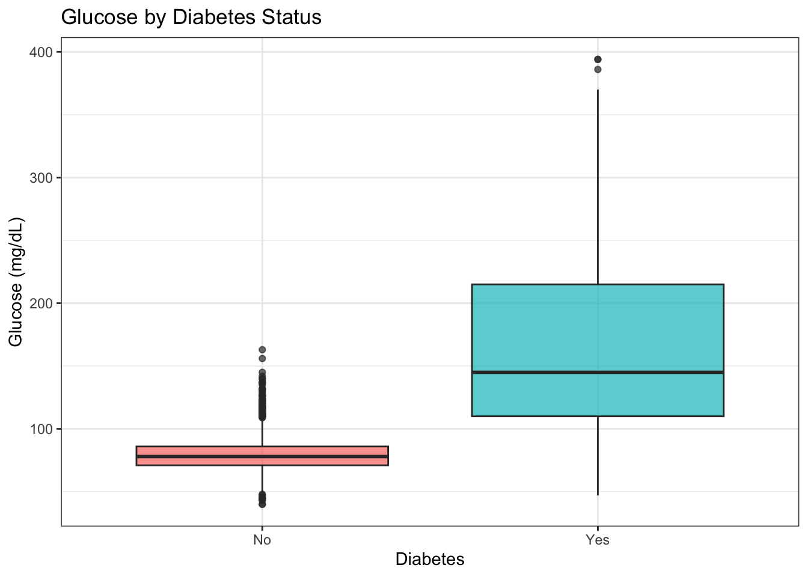
# Separate the two groups
glucose_no <- framingham |> filter(diabetes == "No") |> pull(glucose)
glucose_yes <- framingham |> filter(diabetes == "Yes") |> pull(glucose)
# Distribution check
par(mfrow = c(1, 2))
hist(glucose_no, main = "Non-diabetic", xlab = "Glucose", col = "steelblue")
hist(glucose_yes, main = "Diabetic", xlab = "Glucose", col = "firebrick")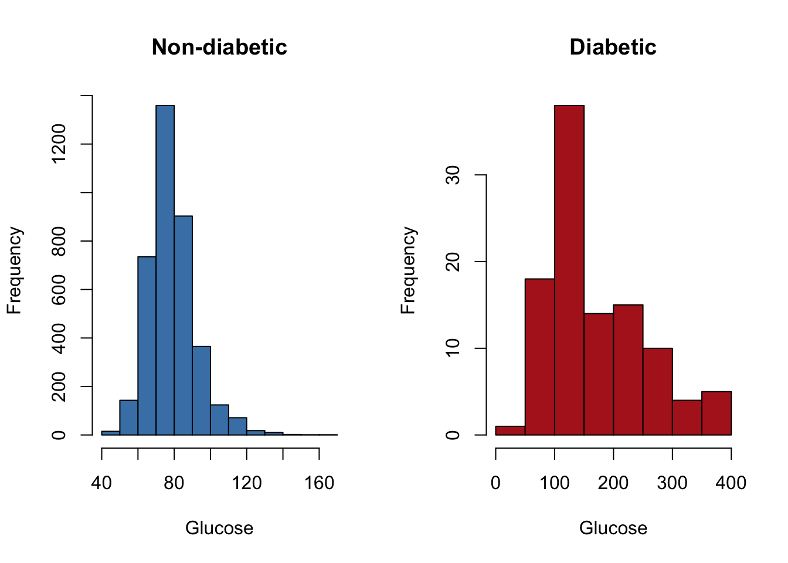
par(mfrow = c(1, 1))The diabetic group is clearly right-skewed with outliers. The Wilcoxon test works on ranks, so these extreme values have much less influence than they would in a t-test.
wilcox.test(glucose ~ diabetes, data = framingham,
conf.int = TRUE) # request the Hodges-Lehmann CI
Wilcoxon rank sum test with continuity correction
data: glucose by diabetes
W = 39657, p-value < 2.2e-16
alternative hypothesis: true location shift is not equal to 0
95 percent confidence interval:
-79.99995 -57.00003
sample estimates:
difference in location
-67.00004 Reading the output:
Wis the rank-sum statistic.p-value: probability of a rank-sum this extreme under \(H_0\) (no systematic difference between groups).difference in location: the Hodges-Lehmann estimator – the median of all pairwise differences between one group and the other. This is the effect size for a Wilcoxon test.- The 95% CI is for this location shift, not for the difference in means.
Compare to what the t-test would give on the same data:
t.test(glucose ~ diabetes, data = framingham)
Welch Two Sample t-test
data: glucose by diabetes
t = -11.048, df = 104.14, p-value < 2.2e-16
alternative hypothesis: true difference in means between group No and group Yes is not equal to 0
95 percent confidence interval:
-107.15217 -74.53985
sample estimates:
mean in group No mean in group Yes
79.48732 170.33333 Both tests give \(p < 0.001\) here, but the t-test CI is for the difference in means while the Wilcoxon CI is for the location shift (closer to the difference in medians). With heavily skewed data, the median shift is often the more honest summary.
2.10 Wilcoxon Signed-Rank Test (Paired)
The signed-rank test is the paired version of the Wilcoxon test. Use it when you have matched pairs and the differences are not Normally distributed.
To illustrate, we compare total cholesterol at baseline to a hypothetical follow-up. Since we only have one time point in Framingham, we will simulate a follow-up measurement by adding a small random change to each person’s cholesterol — just enough to demonstrate the mechanics.
set.seed(42)
n <- sum(!is.na(framingham$totChol))
chol_baseline <- framingham |>
filter(!is.na(totChol)) |>
pull(totChol)
# Simulate follow-up: a 5 mg/dL mean reduction with right-skewed noise
chol_followup <- chol_baseline - rexp(n, rate = 0.2) + 2
# Look at the differences
diff_chol <- chol_followup - chol_baseline
tibble(diff = diff_chol) |>
ggplot(aes(x = diff)) +
geom_histogram(binwidth = 2, fill = "steelblue", color = "white") +
labs(x = "Change in Cholesterol (follow-up − baseline, mg/dL)",
y = "Count",
title = "Distribution of Paired Differences",
subtitle = "Right-skewed — Wilcoxon signed-rank is appropriate") +
theme_bw()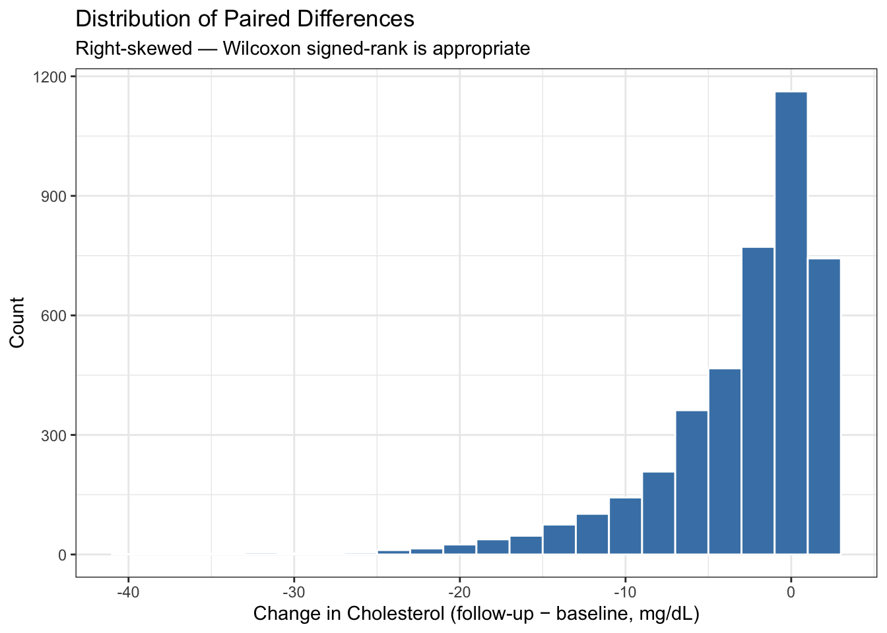
# Wilcoxon signed-rank test on the paired differences
wilcox.test(chol_followup, chol_baseline,
paired = TRUE,
conf.int = TRUE)
Wilcoxon signed rank test with continuity correction
data: chol_followup and chol_baseline
V = 1669059, p-value < 2.2e-16
alternative hypothesis: true location shift is not equal to 0
95 percent confidence interval:
-2.321953 -2.043070
sample estimates:
(pseudo)median
-2.180925 # For comparison -- the paired t-test on the same data
t.test(chol_followup, chol_baseline, paired = TRUE)
Paired t-test
data: chol_followup and chol_baseline
t = -38.472, df = 4189, p-value < 2.2e-16
alternative hypothesis: true mean difference is not equal to 0
95 percent confidence interval:
-3.205461 -2.894599
sample estimates:
mean difference
-3.05003 Because the differences are right-skewed (the simulated noise is exponential), the Wilcoxon test is the more trustworthy result here. In practice, always check the distribution of the differences (not the raw values) when deciding between a paired t-test and the signed-rank test.
Note
Summary: which test when?
| Situation | Normal / large \(n\)? | Test |
|---|---|---|
| One group vs. reference | Yes | One-sample t |
| Two independent groups | Yes | Welch two-sample t |
| Two paired groups | Yes | Paired t |
| Two independent groups | No | Wilcoxon rank-sum |
| Two paired groups | No | Wilcoxon signed-rank |
| Two categorical variables, large counts | — | Chi-square |
| Two categorical variables, small counts | — | Fisher’s exact |
3 Part 2: Exercises
3.1 Instructions
Step 1. Open a new Quarto document. Title it "Day 5 Lab: Inference", select HTML, click Create.
Step 2. Replace the template with this YAML and setup chunk:
---
title: "Day 5 Lab: Inference"
subtitle: "SC INBRE Biostatistics Summer Intensive 2026"
date: today
format:
html:
toc: true
theme: cosmo
execute:
echo: true
warning: false
message: false
---
```{r}
library(tidyverse)
library(this.path)
this.dir <- this.dir()
setwd(this.dir)
framingham <- read_csv("../../data/framingham.csv") |>
mutate(
male = factor(male, levels = c(0, 1),
labels = c("Female", "Male")),
currentSmoker = factor(currentSmoker, levels = c(0, 1),
labels = c("Non-smoker", "Smoker")),
BPMeds = factor(BPMeds, levels = c(0, 1),
labels = c("No", "Yes")),
prevalentStroke = factor(prevalentStroke, levels = c(0, 1),
labels = c("No", "Yes")),
prevalentHyp = factor(prevalentHyp, levels = c(0, 1),
labels = c("No", "Yes")),
diabetes = factor(diabetes, levels = c(0, 1),
labels = c("No", "Yes")),
TenYearCHD = factor(TenYearCHD, levels = c(0, 1),
labels = c("No", "Yes")),
education = factor(education, levels = 1:4,
labels = c("Some HS", "HS Diploma",
"Some College",
"College Degree"))
)
```Step 3. Work through Exercises 1–6. For each:
- Add a code chunk and write your code
- Write 2–3 sentences below the chunk with a plain-language interpretation of your result – not just what the numbers are, but what they mean biologically or clinically
- Always make a plot before running a test
Step 4. Render when finished and fix any errors.
Tip
Before running any test, always: (1) make a histogram or boxplot to look at the data, (2) check whether the assumptions are plausible, (3) then run the test. This is not just good practice – it will catch data problems that would otherwise produce misleading results.
Note
Exercises 1–4 cover one test each and are the core material. Exercise 5 requires you to choose and justify the right test yourself. Exercise 6 is a challenge that brings in visualization and multiple comparisons.
Exercise 1 — One-Sample t-Test.
The normal resting diastolic blood pressure for adults is considered to be around 80 mmHg.
Make a histogram of
diaBPin the Framingham cohort. Does the distribution look approximately Normal? Add a vertical line at 80 mmHg.Run a one-sample t-test testing whether mean diastolic BP in the cohort differs from 80 mmHg. Report the test statistic, degrees of freedom, p-value, and 95% CI.
Write a 2–3 sentence interpretation of the result. Is the difference statistically significant? Is it practically meaningful? (Think about what a difference of a few mmHg means clinically.)
# your code hereExercise 2 — Two-Sample t-Test.
Do male and female participants have different mean systolic blood pressure?
Make side-by-side boxplots of
sysBPbymale. Do the distributions look approximately Normal within each group? Are the spreads similar?Run a Welch two-sample t-test comparing mean
sysBPbetween males and females. Report the estimated difference, 95% CI for the difference, t-statistic, and p-value.Write a plain-language interpretation. Make sure to report the actual estimated difference in mmHg, not just the p-value.
Assumption check: Make a Q-Q plot for each group separately using the code below. Does Normality look reasonable?
# Q-Q plot template -- fill in the group name
framingham |>
filter(male == "Female") |>
pull(sysBP) |>
qqnorm(main = "Q-Q Plot: Females")
qqline(framingham |> filter(male == "Female") |> pull(sysBP))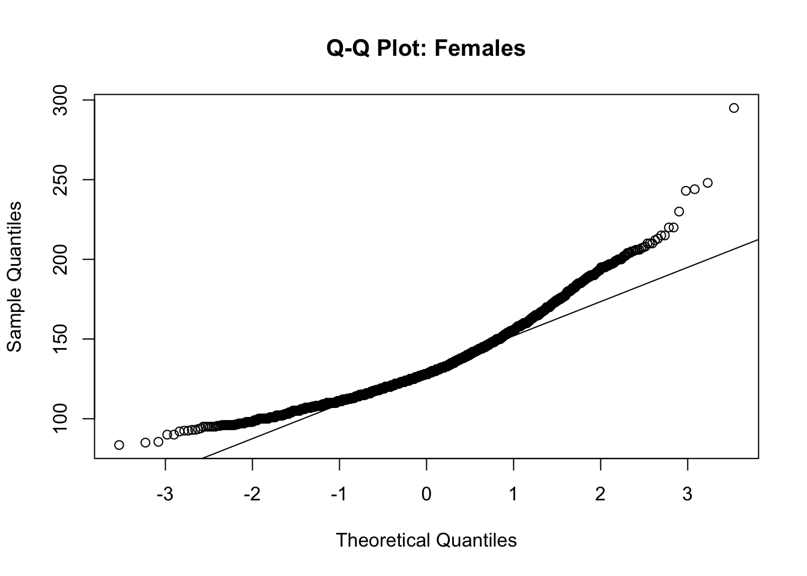
# your test code hereExercise 3 — Paired t-Test.
Systolic and diastolic BP are measured on the same person, so any comparison between them is inherently paired. Pulse pressure (the difference between systolic and diastolic BP) is a clinically meaningful measure of arterial stiffness.
Create a new variable
pulse_pressure = sysBP - diaBP. Make a histogram ofpulse_pressure. What is its mean and standard deviation?Run a paired t-test using
t.test(framingham$sysBP, framingham$diaBP, paired = TRUE). Confirm that the mean of the differences in the output matches the meanpulse_pressureyou computed in (a).The null hypothesis here is \(H_0: \mu_{\text{sys}} - \mu_{\text{dia}} = 0\), i.e., no difference on average. Does the result surprise you? Why or why not?
Now run an unpaired two-sample t-test on the same data:
t.test(framingham$sysBP, framingham$diaBP). Compare the p-values and confidence intervals. Which test is more appropriate and why?
# your code hereExercise 4 — Chi-Square Test.
Is smoking status associated with prevalent hypertension in this cohort?
Create a contingency table of
currentSmokerbyprevalentHypusingtable(). What are the cell counts? Do all expected counts look large enough for a chi-square test (rule: all expected counts ≥ 5)?Run
chisq.test()on the table. Report \(\chi^2\), degrees of freedom, and p-value.Compute the proportion with hypertension separately for smokers and non-smokers using
group_by()andsummarize(). How large is the difference in proportions?Make a grouped bar chart showing hypertension prevalence by smoking status. Use
geom_col()after computing proportions withdplyr.Write a 2–3 sentence interpretation. Is the association statistically significant? Is the effect size meaningful?
# your code hereExercise 5 — Choose the Right Test.
For each of the following questions, (i) state which test you would use and why, (ii) check the relevant assumption(s), and (iii) run the test and interpret the result.
Question A. Is mean BMI different between diabetic and non-diabetic participants?
Question B. Is mean glucose different between diabetic and non-diabetic participants? (Make a histogram of glucose within each group first. Does the distribution look Normal? Does your answer change which test you use?)
Question C. Is education level associated with smoking status? (Both variables are categorical – what test applies here?)
# Question A# Question B# Question CExercise 6 (Challenge) — Multiple Comparisons and Effect Sizes.
We will compare mean total cholesterol (totChol) across all four education levels.
Make a boxplot of
totCholbyeducation. Order the groups by median cholesterol usingreorder().Run pairwise two-sample t-tests across all education groups using:
pairwise.t.test(framingham$totChol, framingham$education,
p.adjust.method = "BH") # Benjamini-Hochberg correctionThe result is a matrix of adjusted p-values. Which pairs of education groups differ significantly (adjusted \(p < 0.05\))?
For each pair that is significant, compute the difference in means and a 95% CI using a standard
t.test(). Are the differences large enough to be clinically meaningful? (A difference of about 10 mg/dL in total cholesterol is generally considered clinically notable.)Why do we need to adjust p-values when running multiple tests? What would happen to the false positive rate if we ran 6 pairwise tests each at \(\alpha = 0.05\) without adjustment?
# your code here4 Quick Reference Card
4.1 Distributions in R
| Distribution | Random draws | Probability \(\leq q\) | Value at quantile \(p\) |
|---|---|---|---|
| Normal | rnorm(n, mean, sd) |
pnorm(q, mean, sd) |
qnorm(p, mean, sd) |
| Binomial | rbinom(n, size, prob) |
pbinom(q, size, prob) |
qbinom(p, size, prob) |
| Poisson | rpois(n, lambda) |
ppois(q, lambda) |
qpois(p, lambda) |
| t | rt(n, df) |
pt(q, df) |
qt(p, df) |
4.2 Hypothesis Tests
| Situation | Function | Key arguments |
|---|---|---|
| One group mean vs. reference | t.test(x, mu = value) |
mu: null value |
| Two independent group means | t.test(x, y) |
Welch by default |
| Two paired measurements | t.test(x, y, paired = TRUE) |
vectors must be same length and order |
| Two categorical variables | chisq.test(table(var1, var2)) |
expects a table of counts |
| Small expected counts | fisher.test(table(var1, var2)) |
use when any expected count < 5 |
| Non-Normal, two groups | wilcox.test(x, y) |
add conf.int = TRUE for CI |
| Non-Normal, paired | wilcox.test(x, y, paired = TRUE) |
|
| Multiple group comparisons | pairwise.t.test(x, g, p.adjust.method = "BH") |
4.3 Reading t-test Output
t.test(x, mu = 0)
# One Sample t-test
# t = 3.45, df = 99, p-value = 0.0008
# 95 percent confidence interval: 1.2 4.8
# sample estimates: mean of x = 3.0- t: test statistic (sample mean − null value) / standard error
- df: degrees of freedom (\(n - 1\) for one-sample)
- p-value: probability of a result this extreme if \(H_0\) is true
- 95% CI: plausible range for the true population mean
- Always report: estimated mean (or difference), CI, t, df, p
4.4 Assumption Checking
# Histogram
ggplot(df, aes(x = var)) + geom_histogram()
# Q-Q plot (base R -- points near the line = approximately Normal)
qqnorm(x); qqline(x)
# Check expected counts after chi-square
chisq.test(tab)$expected # all should be >= 54.5 Common Mistakes to Avoid
- Reporting only a p-value without the estimated effect and CI
- Saying the p-value is “the probability the null hypothesis is true” – it is not
- Using a paired test on independent data, or an independent test on paired data
- Forgetting
na.rm = TRUEinmean(),sd(), etc. - Choosing your test after seeing which one gives \(p < 0.05\)